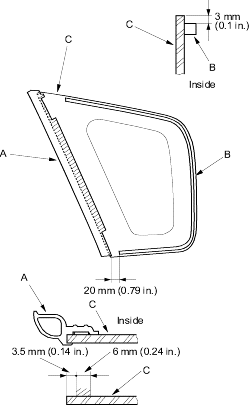
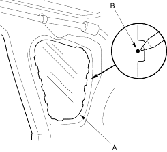

- First glue the front seal (A) and glue the rubber dam (B) to the inside face of the quarter glass (C) as shown. Before installing the front seal, apply primer (3M N-200 or equivalent) to the inside face of the glass, then glue the seal on:
- Be sure the front seal lines up with the bottom and front edges of the glass.
- Be careful not to touch the glass where adhesive will be applied.
Hatched area: Apply body primer here

- Set the quarter glass (A) in the opening, and centre it. From inside the vehicle, make alignment mark (B) to the quarter glass where the rear clip will be installed with a grease pencil. Be careful not to touch the glass where adhesive will be applied.

- Remove the quarter glass.